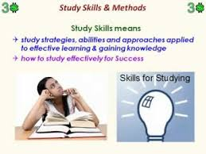
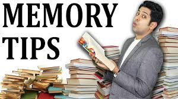

Education refers to the attainment of knowledge through academic and scholastic efforts. Education includes all that can help one’s enlightenment and empowerment. Education gives one the knowledge and skills to work with excellence. It helps in one’s all-round physical, mental and intellectual growth and development. One learns a great deal about life through education. Education is offered through academic and research institutions, and imparted by teachers and trainers. Education equips one to live life meaningfully. It is important that children and youth are educated.
1.Method 1

Education refers to the attainment of knowledge through academic and scholastic efforts. Education includes all that can help one’s enlightenment and empowerment. Education gives one the knowledge and skills to work with excellence. It helps in one’s all-round physical, mental and intellectual growth and development. One learns a great deal about life through education. Education is offered through academic and research institutions, and imparted by teachers and trainers. Education equips one to live life meaningfully. It is important that children and youth are educated so they can live productive lives and help in the progress of the society and nation.
2.Method 2

Increasing graduation rates and levels of educational attainment will accomplish little if students do not learn something of lasting value. Yet federal efforts over the last several years have focused much more on increasing the number of Americans who go to college than on improving the education they receive once they get there.By concentrating so heavily on graduation rates and attainment levels, policy makers are ignoring danger signs that the amount that students learn in college may have declined over the past few decades and could well continue to do so in the years to come. The reasons for concern include: